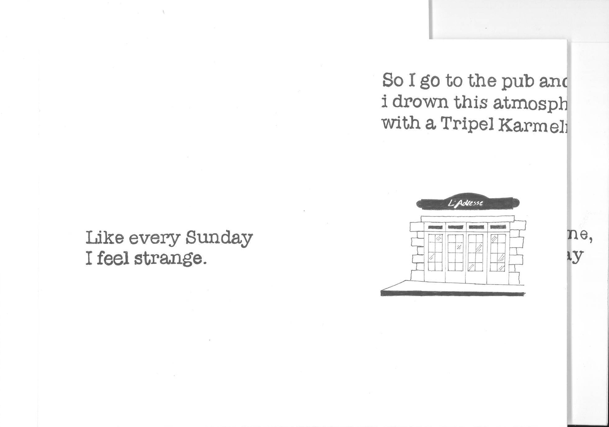
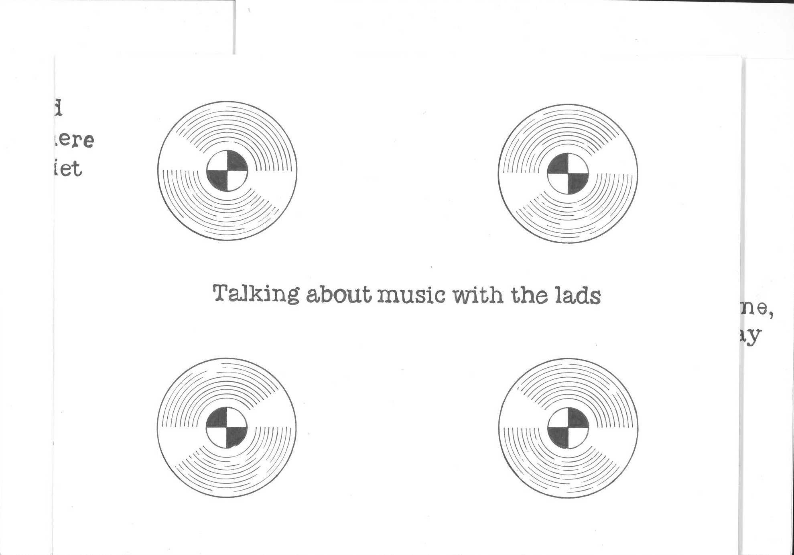
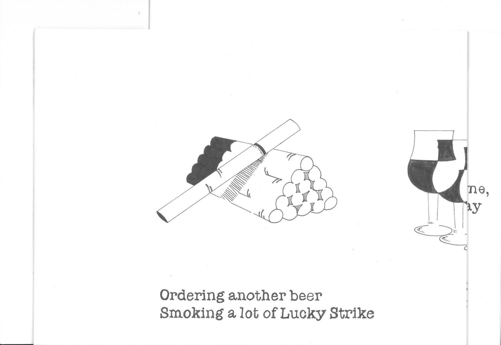
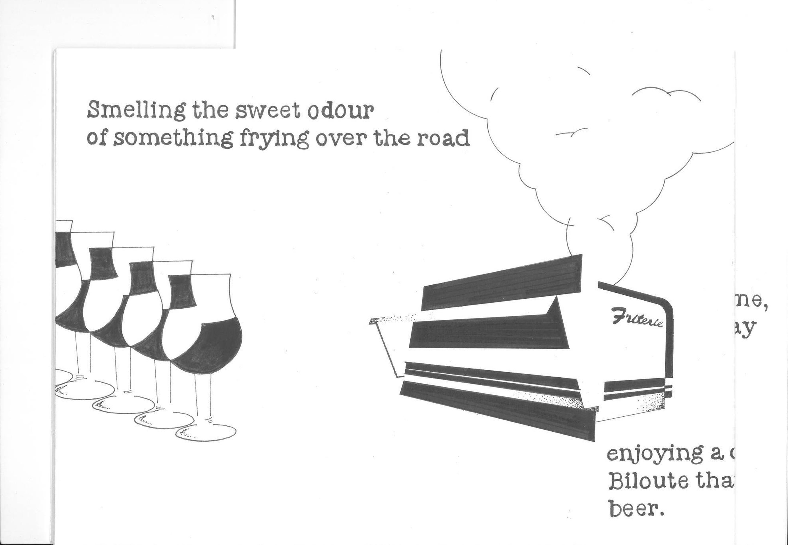
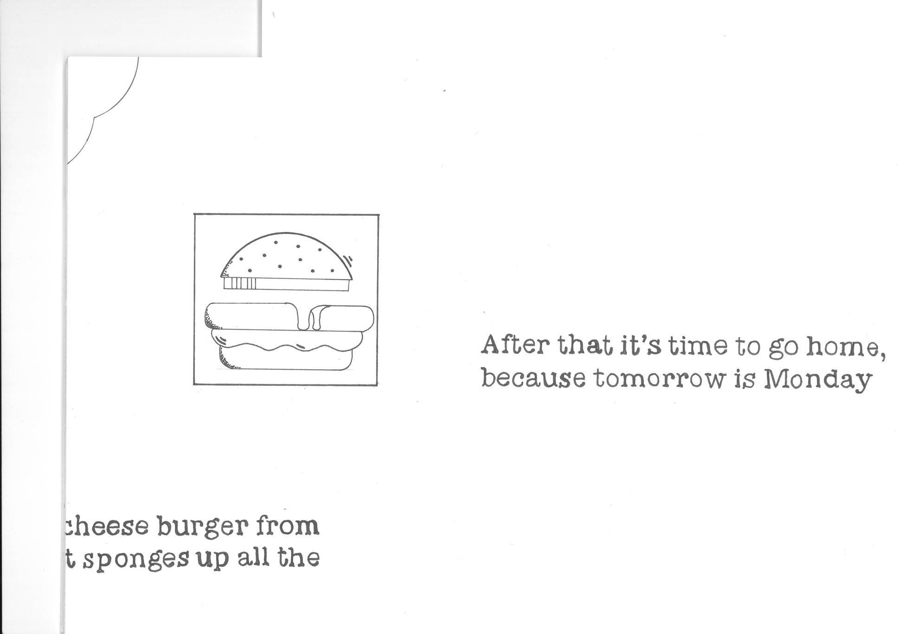

Lucas LESAULNIER
design graphique & autres
à propos
Sad Sunday (2022).
Récit graphique d’une balade quotidienne du dimanche après-midi.
Feutre sur papier canson 250g, 10 pages, 230x230mm, reliure leporello.
    